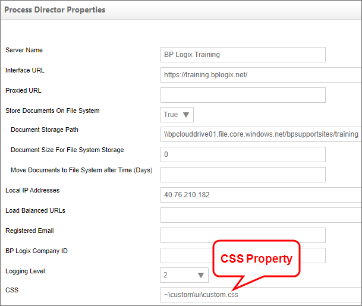
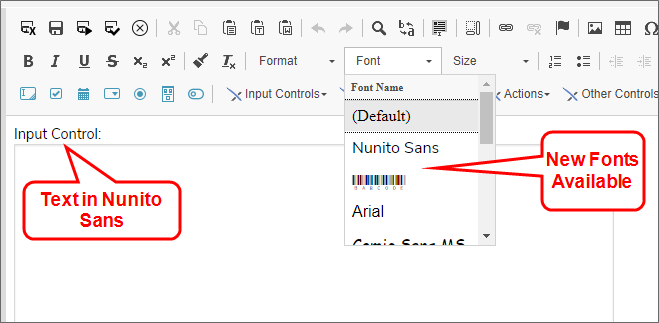
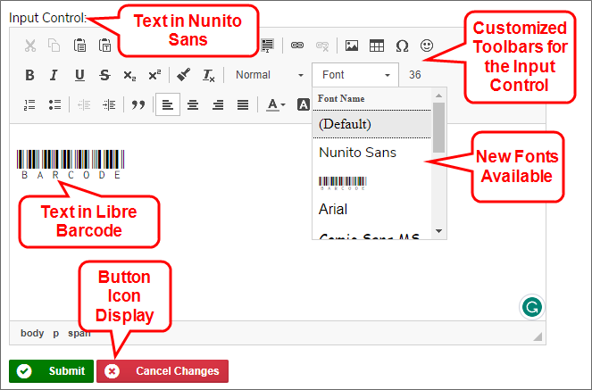

UI Customization
Process Director's user interface can be customized in many ways. In this topic we'll discuss the basic process for customizing elements of the Process Director interface.
One of the most common customization methods is to use a custom stylesheet to change the display of various UI elements.
Process Director has an very extensive style sheet, named bpw.css, and, depending what version of Process Director you're running, a different version of this file will be used to style your installation. You should never edit this stylesheet, because you might seriously compromise the look and feel of the Process Director installation. Moreover, this stylesheet will be overwritten every time you upgrade or reinstall Process Director, so none of the changes you make would be persistent.
Instead, you can create a custom stylesheet that overrides the styles that are defined in bpw.css. This stylesheet can be placed somewhere in the /custom folder to make any changes persistent, since, again, this folder isn't overwritten during upgrade or reinstall. Moreover, the custom stylesheet will be much smaller, since you're only trying to modify a few specific built-in Process Director styles, in most cases, which makes creating it much simpler.
Creating this custom stylesheet will require some familiarity the bpw.css file, so you might find it useful to download it from your installation. This can be done relatively simply by using the Developer Tools built into your web browser. You can press the [F12] key to open the Developer Tools, which will give you access to all of the source files for a Process Director page, from which you can download bpw.css.
For all of the examples presented in this topic, we'll use a custom CSS stylesheet named custom.css, and we'll place it in the /custom/ui folder, so that all of our UI customization files will be organizaed in a single subfolder of the /custom folder.
Adding a Custom CSS Stylesheet to Process Director #
There are two methods for adding a custom CSS stylesheet to Process Director.
Installation Settings
On the Properties page of the Installation Settings section if the IT Admin area, the CSS property will accept the file path of a custom CSS file.

Alternatively, you can edit the Custom Variables file to add the sUseCSS Custom Variable
public override void PreSetSystemVars(BPLogix.WorkflowDirector.SDK.bp bp)
{
bp.Vars.sUseCSS.Add("~/custom/ui/custom.css");
}
 Note the use of the tilde (
Note the use of the tilde (~) character at the beginning of the file location for both the Properties page and the sUseCSS Custom Variable. This is a required shorthand character to prompt the server add in the first part of the fully qualified URL of the file location in Process Director.
Customizing CKEditor #
For Process Director v5.00 and higher, a third-party tool, CKEditor, is used to provide the form design and text formatting tools used in the Online Form Designer (OFD) and in Input controls that are configured with the Use Text Editor property selected when placed on a Form.
By default, the appearance of the CKEditor component is controlled by configuration files that are installed with Process Director. This default configuration can be overridden by the use of custom configuration files that you can add to your Process Director Installation. Both the OFD and the Input control use different configuration files, and each of these files can be overridden via the use of System Variables that can be placed in the PreSetSystemVars portion of the custom vars file, which is located at /custom/vars.cs.ascx. The /custom folder of a Process Director installation not overwritten on upgrades, so any customization changes made to the system always need to be stored in this folder, to ensure the customization is persistent across versions.
The FormEditorConfig Custom Variable enables you to customize the OFD, while the sCkEditorCustomConfig Custom Variable enables you to customize the Input control's Text Editor.
 If you make a mistake in the JavaScript configuration file for CKEditor, you can always remove the FormEditorConfig or sCkEditorCustomConfig setting from your Custom Variables file and return to the default Process Director settings. None of the settings you configure in a custom CKEditor configuration file are permanent, and can always be rolled back to the Process Director default.
If you make a mistake in the JavaScript configuration file for CKEditor, you can always remove the FormEditorConfig or sCkEditorCustomConfig setting from your Custom Variables file and return to the default Process Director settings. None of the settings you configure in a custom CKEditor configuration file are permanent, and can always be rolled back to the Process Director default.
In both cases, a JavaScript configuration file needs to be specified for each Custom Variable. Some knowledge of basic JavaScript syntax is required to use the configuration file correctly. Happily, the syntax used in the configuration files is very standardized, so it doesn't require too much effort to understand it.
We'll also be providing extensive examples here, so you can largely copy and paste the examples right from this documentation topic. Also, full documentation for the CKEditor's Toolbar configuration can be found at the CKEditor Documentation web site.
If you wished to customize both the OFD and the display of the Input control's Text Editor, you'd need to add the following lines of code to PresetSystemVars:
public override void PreSetSystemVars(BPLogix.WorkflowDirector.SDK.bp bp)
{
bp.Vars.sCkEditorCustomConfig = "/custom/ui/cust_txt_config.js";
bp.Vars.FormEditorConfig = "/custom/ui/cust_ofd_config.js";
}
You need to use the full client path, without using a "~", in the URL to the Configuration file.
Note that, in the examples above, both of the customization files reside in the /custom/ui folder. Creating them in a subfolder helps to keep the system organized by placing all of your UI customization files in the same folder. You could, of course, place them in the /custom folder directly, but BP Logix recommends that you organize subfolders for your customizations, to keep the /custom folder from getting too cluttered. Note also that, in this example, the names of the JavaScript files specifically identify whether the configuration refers to the Text Editor or the OFD.
Process Director has an existing configuration file for the CKEditor built into the product. You won't ever edit that configuration file. Using a custom configuration file will simply override your installation's default configuration with your custom configuration from the customization file, but will never alter any of the built-in default settings that BP Logix has configured for the CKEditor in the Online Form Designer.
All of the customization files for CKEditor must have the CKEDITOR.editorConfig function. It's the only function you'll place in the file, and all customization commands must be placed insideit, as shown in the example below.
CKEDITOR.editorConfig = function (config) {
}
Customizing the Online Form Designer #
To see the changes you make to the configuration, you'll need to delete your browser cache and reload the Process Director web page every time you upload changed versions of vars.cs.ascx or any of the customization files discussed in this topic.
In most cases where you might want to edit the tools that are displayed in the OFD, you'll only want to remove certain tools that are of minimal use, or which you don't want Form designers to access. The config.removeButtons command enables you to list the buttons you want to remove from the OFD editor.
For instance, if you wanted to remove the iFrame, Smiley Face, and View Source buttons from the OFD toolbars, your custom configuration file would contain only the JavaScript below:
CKEDITOR.editorConfig = function (config) {
config.removeButtons = 'iFrame,Smiley,Source';
}
This configuration file would simply override the default configuration file to remove the specified buttons. All the other default configuration settings would be applied, since your custom configuration file only overrides the settings of those three buttons. This is a much simpler solution for removing buttons than trying to replicate the entire configuration.
Full Customization
The default configuration for the OFD looks something like the example below. The config.toolbar command enables you to build the toolbars and tools you'd like to use in the OFD.
CKEDITOR.editorConfig = function (config) {
config.toolbar = [
{ name: 'document', items: ['BPSave', 'BPSaveOnly', 'BPSaveRun',
'BPSaveTest', 'Bp-discard'] },
{ name: 'clipboard', items: ['Cut', 'Copy', 'Paste', 'PasteText',
'PasteFromWord', '-', 'Undo', 'Redo'] },
{ name: 'editing', items: ['Find', 'Replace', '-', 'SelectAll', '-'] },
{ name: 'tools', items: ['ShowBlocks'] },
{ name: 'links', items: ['Link', 'Unlink', 'Anchor'] },
{ name: 'insert', items: ['Image', 'Table', 'SpecialChar', 'Iframe', 'Smiley'] },
{ name: 'document', items: ['Source'] },
'/',
{ name: 'basicstyles', items: ['Bold', 'Italic', 'Underline', 'Strike',
'Subscript', 'Superscript', '-', 'CopyFormatting', 'RemoveFormat'] },
{ name: 'styles', items: ['Format', 'Font', 'FontSize'] },
{ name: 'paragraph', items: ['NumberedList', 'BulletedList', '-', 'Outdent',
'Indent', '-', 'Blockquote', 'CreateDiv', '-', 'JustifyLeft', 'JustifyCenter',
'JustifyRight', 'JustifyBlock', '-', 'BidiLtr', 'BidiRtl',] },
{ name: 'colors', items: ['TextColor', 'BGColor'] },
'/',
'/',
{ name: 'common', items: [
'bp-input-btn', 'bp-checkbox-btn', 'bp-datepicker-btn', 'bp-dropdown-btn',
'bp-radio-btn', 'bp-section-btn', 'bp-switch-btn'
]
},
{
name: 'bplogix', items: [
'Bp-attach', 'Bp-input', 'Bp-checkbox', 'Bp-datepicker',
'Bp-dropdown', 'Bp-radio', 'Bp-section',
'Bp-routingslip', 'Bp-signaturecomments', 'Bp-signaturecontrol',
'Bp-signaturetopaz', 'Bp-commentlog', 'Bp-tabstrip',
'Bp-tabstripend','Bp-tabcontent', 'Bp-tabcontentend',
'Bp-sectionembedded', 'Bp-sectionembeddedend', 'Bp-arraystart',
'Bp-arrayend', 'Bp-removerowinarray', 'Bp-arraymoveup',
'Bp-arraymovedown', 'Bp-removerow', 'Bp-addrow', 'Bp-sort', 'Bp-sum',
'Bp-button', 'Bp-buttonarea', 'Bp-printbutton', 'Bp-savebutton',
'Bp-cancelprocessbutton', 'Bp-showattach', 'Bp-userpicker',
'Bp-grouppicker', 'Bp-contentpicker', 'Bp-controlpicker', 'Bp-listbox',
'Bp-slider', 'Bp-rating','Bp-lockform', 'Bp-calculation',
'Bp-datedifference', 'Bp-invite', 'Bp-scheduler', 'Bp-html',
'Bp-datasourcepicker', 'Bp-categorypicker', 'Bp-attributepicker',
'Bp-radiobuttonlist', 'Bp-formerrorstrings', 'Bp-forminfostrings',
'Bp-kview', 'Bp-report', 'Bp-label', 'Bp-hotlink', 'Bp-audit',
'Bp-image', 'Bp-manageusers', 'Bp-emaildata', 'Bp-icon',
'Bp-emailcompletelink', 'Bp-comment', 'Bp-commentend', 'Bp-switch',
'Bp-controlpicker', 'Bp-attachkview', 'Bp-showattachkview',
'Bp-arrayrownumber', 'Bp-sysvarform', 'Bp-sysvartaskinstructions',
'Bp-sysvarcurrentdate', 'Bp-sysvarcurrentuser', 'Bp-sysvarstring',
'Bp-sysvarcontrol', 'Bp-reauth', 'Bp-tooltip', 'Bp-activitylog',
'Bp-captcha'
]
},
{ name: 'bptoolbars', items: ['BPINPUT', 'BPOTHERINPUT', 'BPACTIONS',
'BPOTHER', 'BPLAYOUT', 'BPRESPONSIVELAYOUT', 'BPARRAYS', 'BPATTACHMENTS',] },
];
In the CKEditor JavaScript, vertical divider lines between tools on the same toolbar are created with'-', while creating a new toolbar line is denoted with'/'. These conventions enable you to more easily organize the toolbars, and distinguish between different types of tool on each toolbar.
Were you to place this configuration file in your installation as /custom/ui/cust_ofd_config.js and reference it via the FormEditorConfig Custom Variable, it would simply replicate the existing default configuration of the OFD toolbars. You wouldn't see a change, since this configuration is exactly the same as the Process Director default.
Using this configuration file, however, you could change the order in which toolbars and buttons appear, or remove them completely from displaying in your installation.
You should ONLY edit the CKEditor tools (Basically, just the tools highlighted with the bright blue code options in the sample above), and not the Process Director control tools, since that would disable them in your installation. BP Logix recommends that you don't edit any of the sections that are marked off by exclamation points at the start and end of the section. Technically, you could edit these sections to alter the order in which tools or menus appear in the user interface of the Online Form Designer, but we strongly discourage it.
Customizing the Input Control Text Editor #
The default configuration for the Input control's Text Editor would look like this:
CKEDITOR.editorConfig = function (config) {
config.toolbar = [
{ name: 'document', items: ['Source', '-'] },
{ name: 'insert', items: ['Table', '-'] },
{ name: 'paragraph', items: ['NumberedList', 'BulletedList', '-', 'JustifyLeft',
'JustifyCenter', 'JustifyRight', 'JustifyBlock'] },
'/',
{ name: 'basicstyles', items: ['Bold', 'Italic', 'Underline', '-'] },
{ name: 'colors', items: ['TextColor', 'BGColor', '-'] },
{ name: 'styles', items: ['Format', 'Font', 'FontSize'] },
]
}
Again, the config.toolbar command specifies the available tools in the Text Editor, and were you to place this file in your installation and reference it via the sCkEditorCustomConfig Custom Variable, you'd see no change in the UI.
You could modify this file to add or remove tools or toolbars, just as you do the OFD's configuration file. And, once again, you could simply use the Config.removeButtons command to remove unwanted buttons, Of course, since this is already a fairly minimal set of editing tools, your most likely use case will be to add tools to the existing ones, not remove the few that are there. To add new tools, you'll need to modify the configuration file to add the desired tools in the desired locations.
Adding Custom Fonts #
While the default fonts provided with CKEditor are probably adequate for must purposes, your organization may wish to add custom fonts, for various reasons, such as using a specific corporate font, or barcode fonts for barcode readers. In this section, we'll refer to CKEditor generically, but the techniques we'll discuss apply equally to the Online Form Designer or Input control Text Editor.
Just as with customizing the toolbars for CKEditor, you'll need to add some new lines to the JavaScript configuration file. We'll also need to use the sUseCSS Custom Variable in the custom variables file.
This font functionality is completely separate from the toolbar configuration. You can customize just the fonts, customize both fonts and toolbars, or, of course, do neither.
Adding the Fonts
Our first step is to supply the font (or fonts, in this case) we'll want to use for customization. Let's say that we want to add a font named Nunito Sans and a barcode font named LibreBarcode39 to Process Director. The first thing we need to do is upload the TrueType font files for those fonts into the /custom/ui folder we've already been using. In this example, we'll upload NunitoSans-Regular.ttf and LibreBarcode39Text-Regular.ttf into the folder. These fonts will need to be accessible on the server so they can be shown to users that don't have them installed on their system.
We'll need to upload a custom CSS file (named "custom.css" in this example) into the /custom/ui folder. This CSS file will have the contents shown below:
@font-face {
font-family: "Nunito Sans";
src: url(/custom/ui/NunitoSans-Regular.ttf);
}
@font-face {
font-family: "Barcode";
src: url(/custom/ui/LibreBarcode39Text-Regular.ttf);
}
.cke_editable {
font: normal .9em "Nunito Sans";
}
.bpFormBody {
font: normal .9em "Nunito Sans"!important;
}
.bpFormBody .gbleft {
font-size: 17px;
}
This simple CSS does four things:
- The two lines that start with the
@font-face directive identify the two fonts we're adding and their location, so that users who do not have them installed can download them directly into their browser cache automatically, and see them on the screen.
- The
.cke_editable class is the default text display class for CKEditor. This CSS will override the default text style and replace it with Nunito Sans as the new default font to use in CKEditor.
- The
.bpFormBody class is a built-in display class that sets the default font for Form text when viewed in running Forms. By default, this font is set to Arial, and we're going to override it with Nunito Sans. Because we're overriding the BP Logix style sheet, we need to add the !Important directive to make this work. If we don't add this class, all of our default text styling will show up as Nunito Sans in CKEditor, but end users will see Arial as the default font when they view the Forms. (Technically, we could skip this CSS class, but then, every time we created a Form, we'd have to specifically style all our text using the Font tool in CKEditor. Changing the default font is just...lots easier.)
- Finally, the
.bpFormBody .gbleft class will ensure that Form buttons, such as the Button Area control that displays the Submit, Cancel, activity result buttons, etc., will display the button icons properly. We're changing the default font on Forms, which will affect how Form buttons display, since Nunito Sans has a different line height than the default Arial font. Setting the font size to 17px tweaks the spacing just enough to make button icons appear vertically centered in Form buttons.
Our problem is that we can't just edit the .gbleft class by itself. It's a universal class that affects all buttons in Process Director. That includes buttons that appear in the UI itself. We don't want to throw off the placement of button icons or images used in the main product UI.
All we want to do is ensure that buttons display icons properly on Forms. So, we need to use the syntax .bpFormBody .gbleft, with a space between the two classes. In CSS, this tells the browser that we only want to make this change to the .gbleft class if it's displayed inside an element that's styled with the .bpFormBody class. Since only the <body> element of a running Form instance uses the .bpFormBody class, and Form buttons are always displayed inside the <body> element, this style will only affect Form buttons on Running Forms. All of the other buttons used elsewhere in the product won't be affected.
Also, we don't need to use the !important directive, since this syntax essentially creates a unique class that automatically overwrites the default .gbleft class on running Forms, due to it's position in the CSS hierarchy.
Process Director's CSS styling is very complex. You should be aware that creating custom styles will be time-consuming, and will require considerable knowledge of CSS to pull off correctly, without adversely affecting the UI of the product itself.
Editing the Configuration file
Next we'll need to edit our custom configuration file(s) for CK editor. We need to add two lines of configuration:
CKEDITOR.editorConfig = function (config) {
// New fonts to add to the system
config.contentsCss = "/custom/ui/custom.css";
config.font_names = 'Nunito Sans;Barcode;' + config.font_names;
// Which is completely separate from the font stuff.
config.toolbar = [
...
]
}
The config.contentsCss command let's CKEditor know that we want to apply some custom CSS to CKEditor, and specifies the relative URL of our custom CSS file.
The config.font_names command adds our two new fonts to the list of fonts that are already shown in CKEditor's Font tool. This particular syntax will add our fonts to the top of the CKEditor Font tool's list of existing fonts, with all of the standard fonts appearing below them in the Font tool.
Our final step is to add our custom CSS file to our existing installation's configuration, as described in the Adding a Custom CSS Stylesheet section, above.
If you want the new fonts used as the default font for both the OFD and the Input control, you'll need to add these lines to both configuration files.
Once you've completed these steps, the two new fonts will be available for use in CKEditor, and will display properly in Process Director for end users.
Here's how it looks in the OFD:

And here's how it looks in a running Form that uses the Input control's Text Editor:

Environment Message Customization #
The Server Control page of the IT Admin area's Troubleshooting section enables you to display an environmental message, e.g., "Staging Server" at the top of every page displayed to user, in order to let them know what environment they're using. This message can be styled in a custom CSS stylesheet, by setting the desired properties for the .bpCustomInfoText style. The most common customization would be to change the background color of the message, using the style syntax:
.bpCustomInfoText {
background-color: #FFE600;
}
For this style to appear to users, you must add a custom CSS stylesheet to Process Director, as described above, if you do not already have one configured.